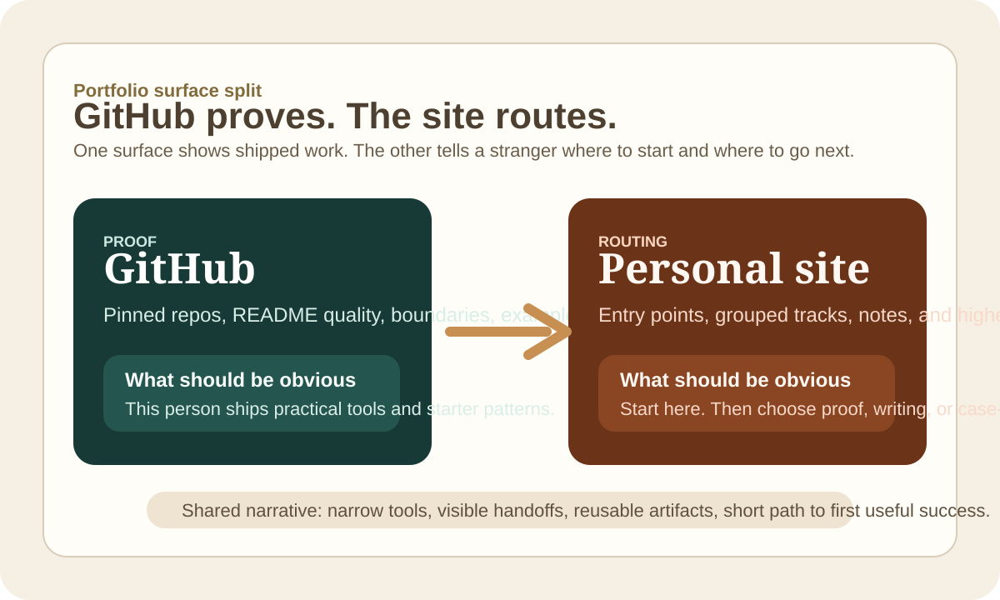

GitHub Should Prove and the Site Should Route
A good portfolio gets stronger when GitHub shows the proof, the site handles routing and context, and neither surface tries to do the other's job.
When GitHub and a personal site are both public, it is tempting to make them repeat each other. That is usually the weaker setup. I want the two surfaces to divide the work cleanly.
What each surface should do
GitHub should prove that I actually ship things. The profile should show the kinds of repos I keep choosing, the scope I prefer, and whether the work feels practical or fake-complete. The site should do something different. It should help a stranger figure out where to start, which notes explain the point of view behind the repos, and which case studies give the higher-context version of the same judgment.
If both surfaces just list the same things, they are wasting attention.
The site should route the next move
What I want from the site is not a bigger inventory. I want routing. If someone lands on the homepage, the path should be obvious:
- start with one short note that explains the repo batch
- jump to grouped project tracks instead of a flat list
- move into case studies if they want higher-context product work
- use GitHub when they want the proof layer and the actual repos
That is a much better use of the site than repeating a pinned-repo section with nicer typography.

GitHub should keep the proof compact
I do not want the GitHub profile to become a second homepage either. The profile should stay tight:
- a short explanation of the themes
- a small grouped set of repos
- one or two links that route into the site
That is enough. Once the profile starts trying to carry every explanation, it gets longer without getting clearer.
The failure mode is duplication without a stronger story
This is the trap I keep seeing in technical portfolios. The site repeats the repo list. The GitHub profile repeats the bio.
The writing sits off to the side instead of helping the repos make more sense. Nothing is wrong in isolation, but the surfaces do not compound. The better version is when each surface hands off cleanly to the next one.
The bar I care about
After a few minutes, a stranger should be able to tell three things:
- what kind of problems I like to work on
- what kind of artifacts or tools I tend to leave behind
- where to go next if they want proof, context, or depth
That is the split I want: GitHub proves, the site routes, and the writing explains why the shape looks like this.